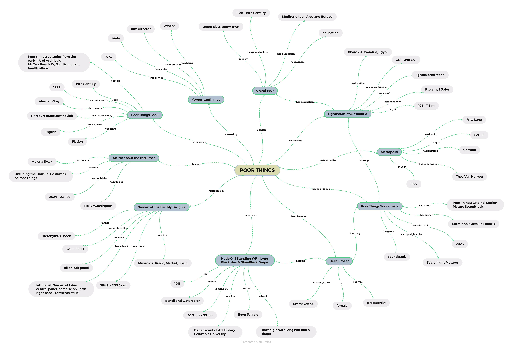

Our Items
Here are the 10 selected items we've chosen for the study domain.
Poor Things: Episodes from the Early Life of Archibald McCandless M.D., Scottish Public Health Officer
The book written by Alasdair Gray, from which the film 'Poor Things' is an adaptation. Published in 1992, Gray's novel is a gothic and satirical revisiting of Mary Shelley's Frankenstein story, set in Victorian-era Scotland.
Learn moreYorgos Lanthimos
The director of "Poor Things" is Yorgos Lanthimos, known for his distinctive style and compelling storytelling.
Learn MoreThe Garden of Earthly Delights
Hieronymus Bosch's painting serves as a guiding influence, shaping both the visual aesthetics and thematic essence of the film.
Learn MoreSoundtrack
Fendrix, the composer behind "Poor Things," blends live recordings with synthesized effects, fashioning a unique digital soundworld that explores human life and mortality's mystique.
Learn MoreBella Baxter
This is a wider card with supporting text below as a natural lead-in to additional content. This card has even longer content than the first to show that equal height action.

Metropolis
The director of "Poor Things" is Yorgos Lanthimos, known for his distinctive style and compelling storytelling.
Article
The director of "Poor Things" is Yorgos Lanthimos, known for his distinctivestyle and compelling storytelling.
Lighthouse of Alexandria
the Lighthouse of Alexandria is a monumental structure from ancient Egypt's Ptolemaic dynasty and one of the seven wonders of the ancient world. In the movie, it serves as the backdrop for Bella's awakening to the realities of injustice and class disparity, during her visit to Alexandria.
Learn moreNude Girl Standing With Long Black Hair & Blue-Black Drape
Director Yorgos Lanthimos took inspiration from this Egon Schiele's painting, particularly the subject's long black hair and unapologetic sensuality, to shape Bella's appearance in the movie.
Learn moreGrand Tour
The Grand Tour was an educational trip trough Europe and the Mediterranean area, performed by young upper-class men between the late 17th and early 19th. Bella's travels echo the tradition of the Grand Tour, as she not only explores the world for the first time but also embarks on a journey of self-discovery.
Learn moreConceptual Map
Regarding "Poor Things," the selected items play a pivotal role in authentically narrating its story. Our conceptual map aims to depict the gathered data in natural language, illustrating the extracted information and the connections between them. Purple nodes in the graph denote the selected items, while orange nodes highlight significant events and individuals associated with the main subject. CHANGE COLOR NAMES
E/R Model
In this second model, we aim to present the data and relationships from the conceptual map in a more abstracted manner. Here, individuals, dates, subjects, places, and other elements are represented as entities, while the connections between them are depicted as relationships.

Metadata Analysis
This second model displays data and relationships from the conceptual map in a more abstracted layer. Here we represent people, dates, subjects, places etc. as entities and the connections between them as relationships.
| Item | Type | Source | Metadata Standard |
|---|---|---|---|
| Yorgos Lanthimos | Director | IMDB | schema.org |
| Poor Things | Book (novel) | Wikidata | DublinCore ? |
| The Grand Tour | Activity | OpenLibrary | schema.org |
| The Garden of Earthly Delights | Painting | Museo del Prado | CWDA |
| Metropolis | Film (reference) | IMDB | ? |
| Lighthouse of Alexandria | Monument | Wikidata | CWDA |
| Poor Things | Soundtrack | Wikidata | Music Ontology |
| Bella Baxter | Character | Genius | ? |
| Nude Girl Standing With Long Black Hair & Blue-Black Drape | Portrait | Fandom | CWDA |
| Unfurling the Unusual Costumes of Poor Things | Article | Media Center for Art History | ? |
Metadata Alignment
After identifying the related institutions and their standards, this final step allows for the complete description and connection of items. The main goal of this project has been to use shared semantic ontologies to ensure consistent data delivery.
Regarding the standards, where we could not find the metadata alignement we wrote N/A on the table below.
Metadata Alignment
After identifying the related institutions and their standards, this final step allows for the complete description and connection of items. The main goal of this project has been to use shared semantic ontologies to ensure consistent data delivery.
Regarding the standards, where we could not find the metadata alignement we wrote N/A on the table below.
| Property | Dublin Core | CDWA | Schema.org | Marc/Marc21 | CCO | CIDOC-CRM |
|---|---|---|---|---|---|---|
| Creator | dcterms:creator | Creator Description Creator Identity Creator Role |
creator | 100 - Main Entry - Personal Name | Creator display Creator Extent |
E39 Creator P94 has created (was created by) P14 carried out by (performed) |
| Property | Dublin Core | CDWA | Schema.org | Marc/Marc21 | CCO | CIDOC-CRM |
|---|---|---|---|---|---|---|
| Title | dcterms:title | Title | name | 245 - Title Statement | Title display Title Extent |
E35 Title P102 has title (is title of) |
| Property | Dublin Core | CDWA | Schema.org | Marc/Marc21 | CCO | CIDOC-CRM |
|---|---|---|---|---|---|---|
| Location | dcterms:spatial | Location | location | 752 - Added Entry - Geographic Name | Location display Location Extent |
E53 Place P89 falls within (contains) |
| Property | Dublin Core | CDWA | Schema.org | Marc/Marc21 | CCO | CIDOC-CRM |
|---|---|---|---|---|---|---|
| Date | dcterms:date | Date | datePublished | 260 - Publication, Distribution, etc. (Imprint) | Date display Date Extent |
E50 Date P4 has time-span (is time-span of) |
Theoretical Model
The theoretical model introduces a higher level of interpretation, enriched with web-based information. Its purpose is to address the following questions: - WHO? Identifying individuals related to the main topic and their respective roles. - WHAT? Providing descriptions of the objects: their purposes and characteristics. - WHERE? Pinpointing locations and significant places. - WHEN? Highlighting relevant dates and events.
Enhanced E/R Model
Transitioning from natural language to an Entity/Relationships model once more, we incorporate additional details akin to the previous E/R model. This augmentation aims to enrich the model with a deeper understanding of the relationships between entities and their attributes.
Conceptual Model
At last, we arrive at the utmost level of abstraction through this formal representation. This model is ontological in nature as it depicts entities and relationships based on the final adopted standards and classes of the corresponding institutions. The properties utilized are sourced from existing schemas, ontologies, and vocabularies, ensuring alignment with established conventions and terminologies.
Items Description
In the knowledge representation section, we will generate new data based on the selected items. We will create a table for each item, containing statements in the form of subject-predicate-object. To download the table information in CSV format, please click on the "Download Table" button located at the bottom of each table.
URI Production
In this step, we select 4 items from our provided list as RDF subjects. We create the following URIs to describe the items and their significant entities. These URIs serve as unique identifiers for each item in the RDF representation, allowing us to describe their properties and relationships within the semantic web framework.
RDF Production
In this step, we employ the URIs generated previously to craft RDF statements in Turtle serialization format. These statements incorporate additional authorities and sources, linking them to the existing data of our items.
RDF Visualization
At last, here is the visualization of the RDF statements, offering an alternative perspective to enhance comprehension of the knowledge.
Team
These are the 3 Mary Shelleys